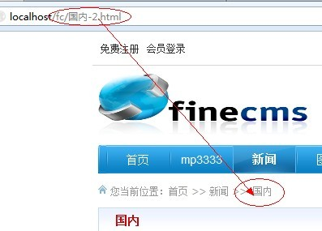

一、支持主表字段（如果需要附表字段可以使用方法“三”）
要使用个性化URL结构，必须先阅读上面“数据结构”章节
{catname}：示栏目名称，看过“数据结构”的都懂，不解释
{title}:是文章的id
静态生成模式，不用加{id}标签，但要确保url地址的唯一（可以加其他参数来区分，如时间）
2、伪静态模式
伪静态模式，栏目必须有{id}或者{dir}/{pdir}，内容必须加{id}标签，前面已经说的很清楚了

如果你的服务器不支持多编码，可能会出现中文乱码，慎用
二、运用普通函数（以md5函数为例子）
1、静态生成模式{md5({id})}.html : {id}表示调用当前的id，{md5(xxx)}表示进行md5运行，因为是静态生成模式，所有可以不用再次加id了
2、伪静态模式{md5({id})}-{id}.html : 前面一节跟上面一样，后面{id}表示调用当前的id，因为是伪静态嘛，必须与服务器的id匹配运算，所有必须加一个id
{word2pinyin({title})}-{id}.html : 拼音标题+id.html（需要用的可以参考，不支持特殊汉字）
RewriteRule ^([a-zA-Z0-9]{32})-([0-9]+).html$ index.php?c=content&a=list&catid=$2 [L] (md5是32位的所有前面写了{32})

三、运用自定义函数

从上面不难看出，我们是调用了自定义函数test()，那么我们就定义一个test的函数（自定义函数应该放在专用文件里/trunk/extensions/custom.php，不会影响系统升级）
function test($data, $page=1) {
if ($page > 1) { //当带有分页时
//word2pinyin函数是系统自带的拼音转换函数，特殊字不支持哦~
return word2pinyin($data['title']) . '-' . $page; //上面规则中写了.html为后缀，在这里就不用写了
} else { //当不带分页时
return word2pinyin($data['title']); //上面规则中写了.html为后缀，在这里就不用写了
}
}
//其实这种URL格式方法二完全可以实现的

补充： 上面函数中的$data数组是指当前文章表（不包括自定义字段，若要使用自定义字段必须查询）、栏目表、表单（包括自定义字段）的数据